Due to many factors, and hastened by the events of 2020, the payment market is moving fast to more contactless payments. Some of the most familiar methods include RFID technology and Digital Wallets using mobile terminals like the Clover Flex that Gravity Payments offers. Text-to-pay is also a popular method desired in automotive, healthcare, veterinary, and service-oriented businesses.
Competitors like autotext.me, SwipeSimple, and Weave offer text-to-pay solutions which put Gravity at a disadvantage in the market.
Partners integrate our Text-to-Pay API into their software, website, or POS. The API initiates an SMS message with a link to a payment page hosted by Gravity Payments. Merchants who use Text-to-Pay can upload a logo and set business-specific information in our customer Dashboard.
Text-to-Pay launched in June 2021. The team worked to complete the MVP with an expected completion of June 2021.
What we needed to solve
- High partner attrition to competitors with a full solution including text-to-pay
- New partners ask for a text-to-pay solution which we couldn't fulfill
- Customers frustrated about payment options in socially distant situations
- Text-to-pay providers charge a hefty fee to both the partner and merchant
Our approach
- Develop a text-to-pay solution quickly on our API for partners to integrate
- Design and release an MVP that provides value to the merchant and end-user to lessen attrition
- Make the payment page simple to use and responsive — reduce any potential friction to complete the payment
- Build the product on our existing architecture to reduce build time and additional cost to merchants
Results
Text-to-Pay launched in June 2021. Though I left Gravity before the final launch and could not finalize quantitative measurements, we saw very positive qualitative reviews.
- Stakeholders who tested the prototype were extremely positive and excited about the experience.
- Testing of the prototype and early MVP provided thoughtful responses and insights to refine the page and remove friction to complete payments quickly.
- Previewed the roadmap and final product to our top partners. The interest was very exciting. They expressed they will be staying with Gravity as we released the product in June 2021.
- Sales teams expressed extremely high interest from merchants that planned to use this feature.
Continue reading to see how I applied principles of a lean design approach
Understand the problem
Discovery discussions were held with prospective and confirmed partners that will integrate Text-to-Pay, such as Hippo, Vet2Pet, and Instinct Science. During these sessions, the partners gave us great insight into their business needs and the potential merchants and customer users essential to the experience.
- Merchants need a way to accept payments that is contactless and secure.
- POS software developers need a contactless payment method that is secure and keeps them out of PCI scope.
- Paying customers need the process to be quick and seamless.
Highlights from our partner explorations
The main benefits they are looking for are convenience, efficiency, easy API, better experience, and security. Text-to-Pay will be the middleware between the partner's software and the user making the payment. Credit Sale transaction type will be the main feature of MVP, however, more payment types may be explored in the future.
Project limitations
- Short timeline — we want to get this product to market fast
- The current API payment system, emergepay, will need some hefty upgrades to support the new payments page
- Due to time constraints, payment wallets may not be part of MVP, but will be a fast follow
- Need to integrate to 3rd party texting solution for delivery of SMS text message
Initially, my Product Manager did not see the value of further discovery. I was able to impart the importance of not skipping valuable exploration steps. I successfully conducted 3 mini-workshops: Competitive Review & Heuristic Audit, Personas, and Initial User Flow.
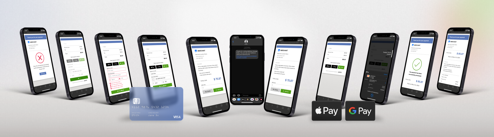
Personas — Who gets value from Text-to-Pay?
As an API-driven service, our users are POS software developers, merchants, and paying customers. Our focus is on the paying customer up-leveling their experience and ease of payment. Our first integration partners are in the Veterinary space. I defined 3 personas:
- Partner Developer — need to integrate with our service
- Merchant — need to run their business and take payments
- Customer — need payments to be quick, easy, and flexible

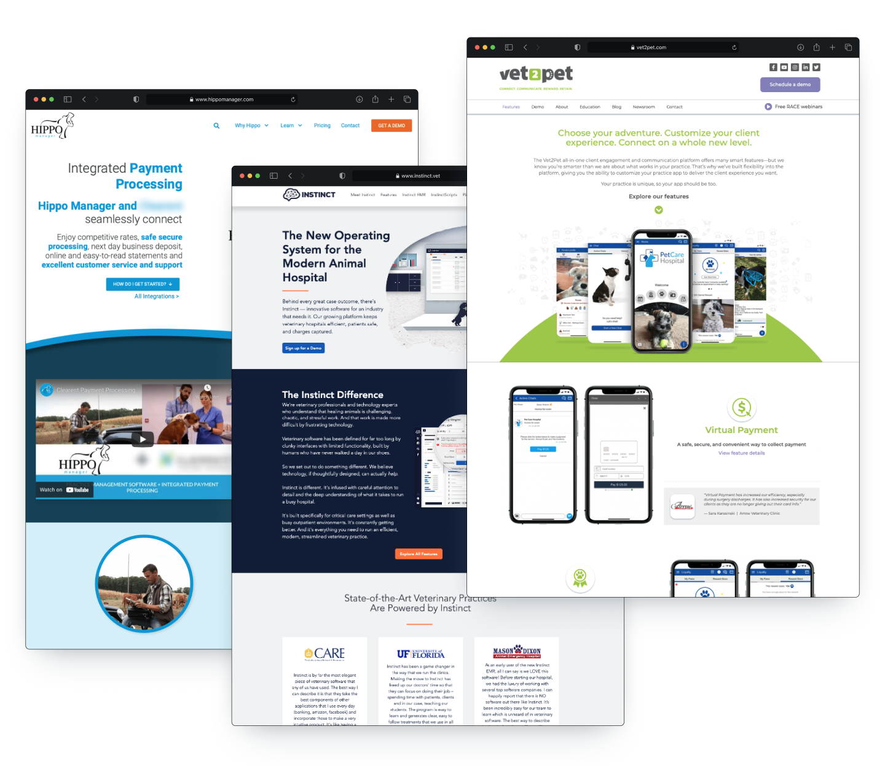
Storyboard
As part of gaining empathy for the users and understanding the story, I used Miro to create a quick storyboard. Miro's iPad app has simple sketching tools that kept me from trying to make it look pretty and spend the time delivering a story. The heroes of the story are our identified personas that use VetOfficeManager (not real) software.
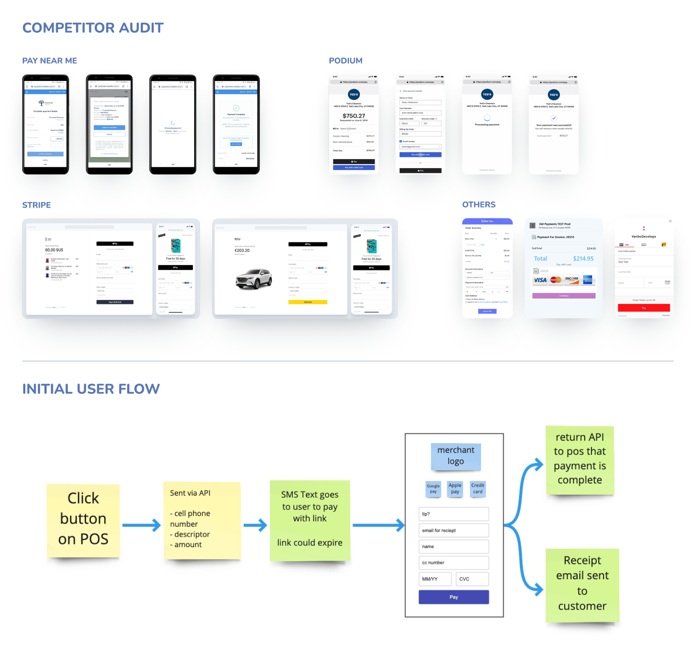
Wireflow — It all came down to the wire
One of my favorite methods is combining the user flow with a quick wireframe. Especially when the user flow is short and the project has a lean timeline. When I presented the wireflow to stakeholders and the dev team, I was able to iterate fast using my wireframe components and made remote collaboration a breeze. During this remote collaboration, we were able to identify, as a team, obstacles we would face at implementation and patterns that may slow the user.
There were 2 flows established for our user groups: Text-to-Pay and Dashboard set-up.
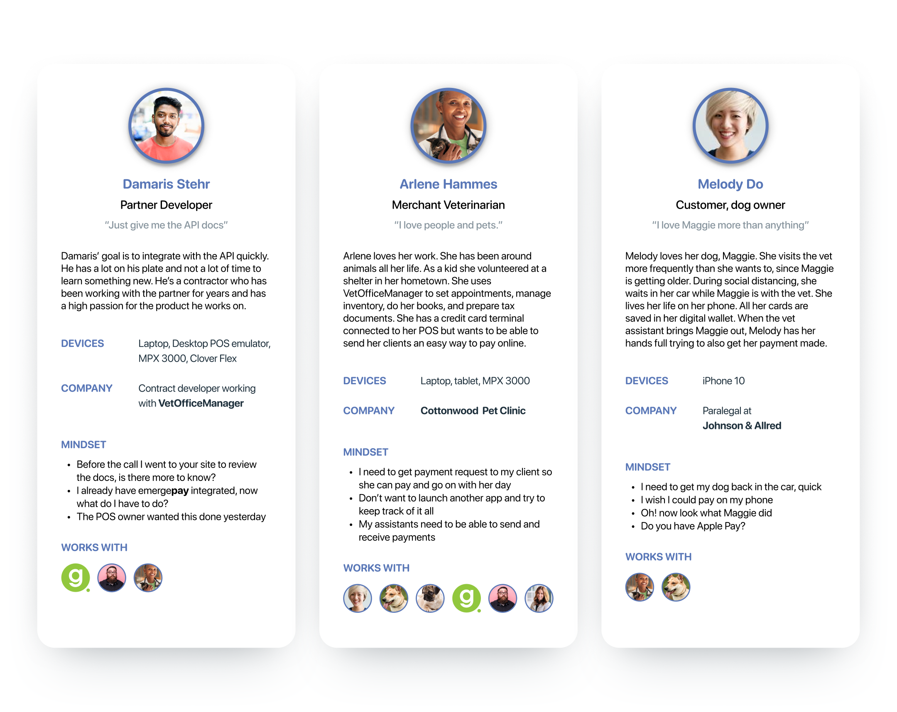
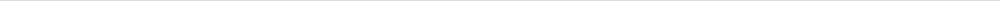
UI Design — In all great collaborations, it's about U & I
There was no need to develop a new design system or pattern library. Using the proven components and styles from our core system saved time in design and development. The UI design was intentionally simple. The payment page contains the merchant logo so the UI should not distract from the merchants' existing visual standards. Plans are in the roadmap to include further customizations by the merchant.


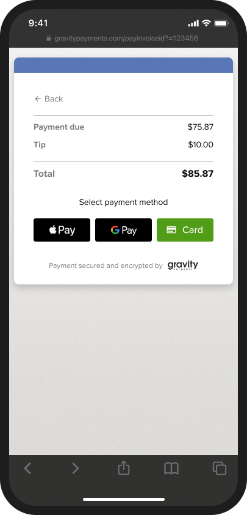

Prototype and test — Guerrilla testing for the win
With a tight timeline and simple design, I wanted the testing to be as short and as effective as possible. Using Figma prototypes I engaged our Customer Support, Developers, Product Manager, and random family/friends. There were no big surprises from the testing. The most valuable learning was validating the iterations made during the wireflow work. The testing revealed the importance of having development involved early during the design process.
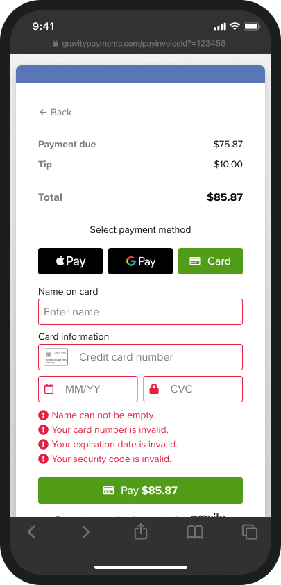
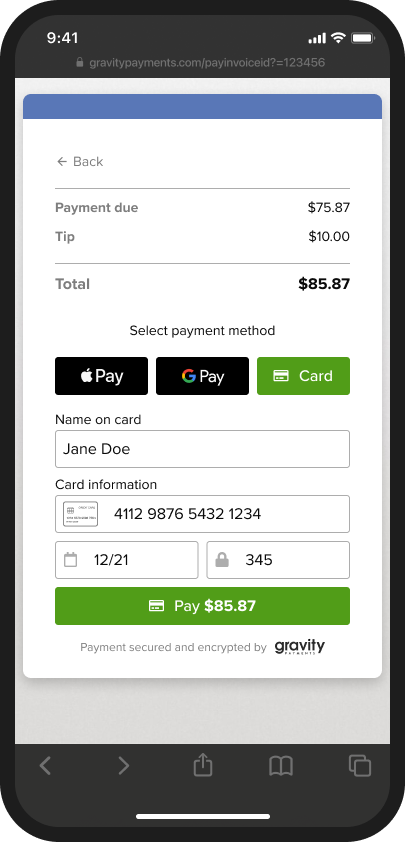
Building the MVP — Devs love diagrams
As part of the handoff process, I gather all the screens into a UI flow. This helps direct the developer to the UI element they are working on. I've created a custom arrow & flow component library that can make this process very fast. This method is more effective than delivering a prototype to developers. Within the flow, I annotate screen elements with interaction samples, animation timing, and alternate states. Using Figma's inspect mode eliminates the need to go into deep redline details.
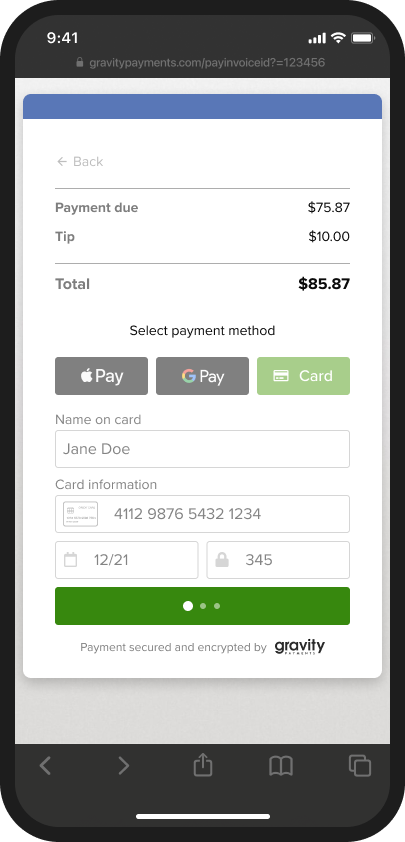
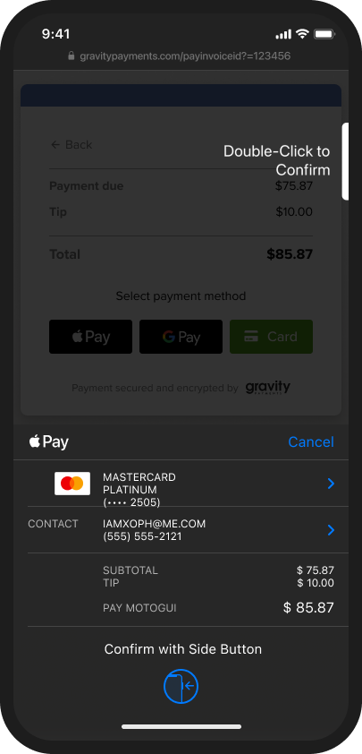
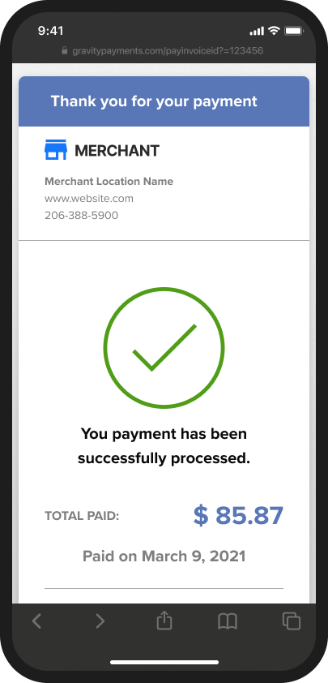
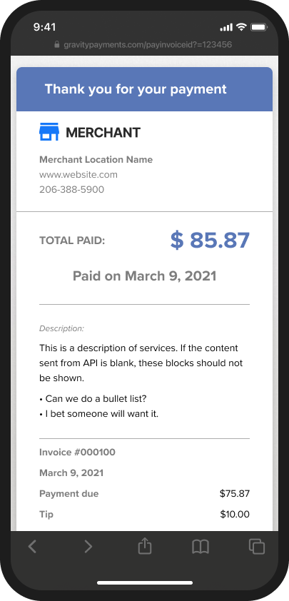
I hate the description "Unicorn" to describe a designer that codes. I work directly with the backend developers to deliver the HTML structure and CSS style framework. The experience I've gained through my career and the many hats I've worn make me a versatile member of an agile team.
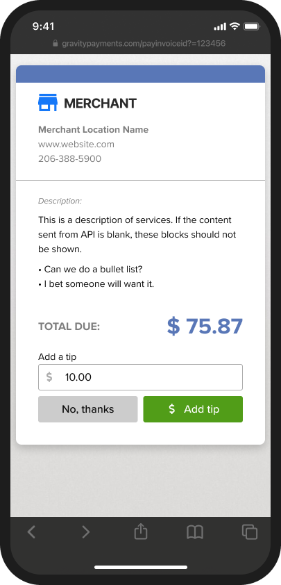
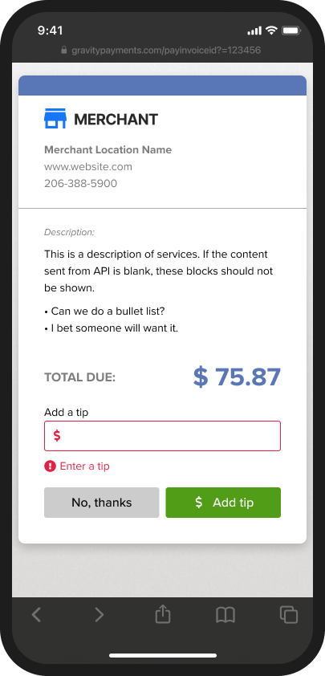